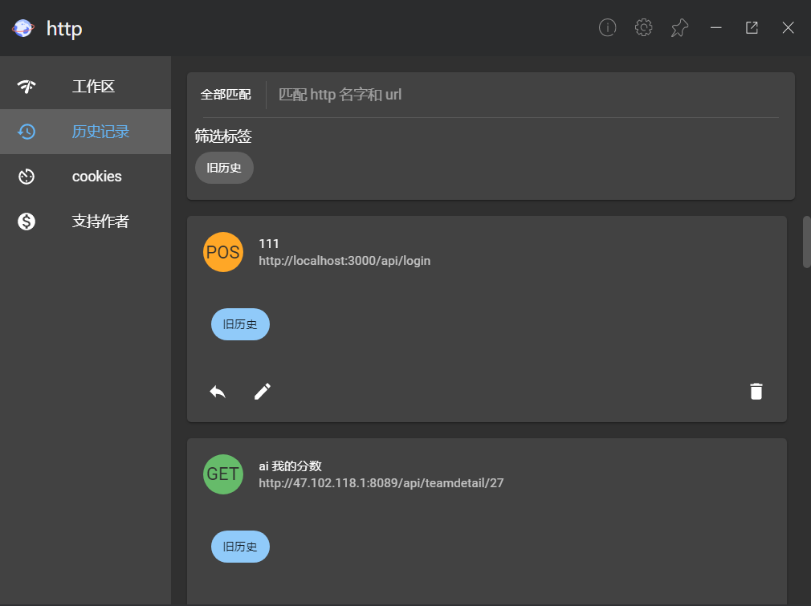
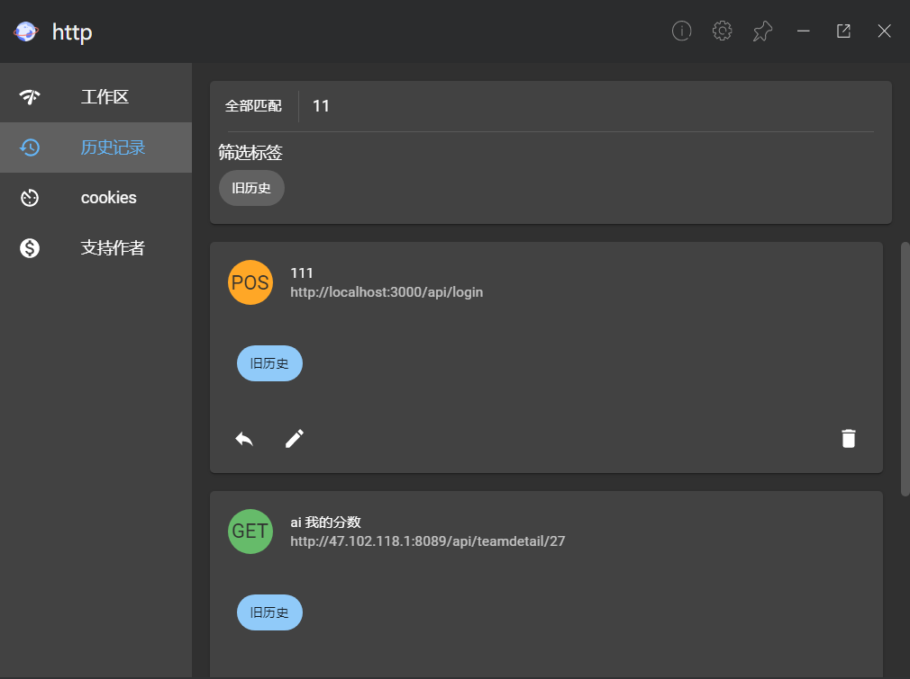
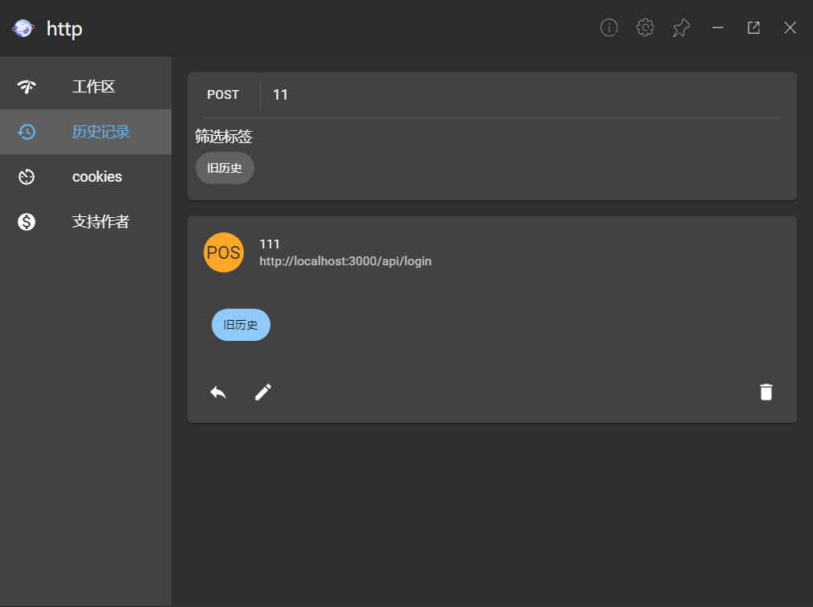

0.2.2 版本更新说明
联系方式
- 我的个人博客 sushao'bolg
- 我的github sushao
- 这个插件的开源地址 utools-http-test
- 这是我插件在官方论坛的 帖子 ,这个帖子下回复我会有提醒的
数据库更新
之前因为数据库和插件渲染 js 线程是一个,读取数据库时间太久,现在数据库运行放到 web worker 中运行,和渲染的 js 可以同步运行,这样避免了插件卡死.
历史记录改进
历史记录现在可以查看更多信息,包括 tag, http 方法, url, 名字
筛选功能也获得了改进,搜索时支持名字, url
还支持方法匹配
